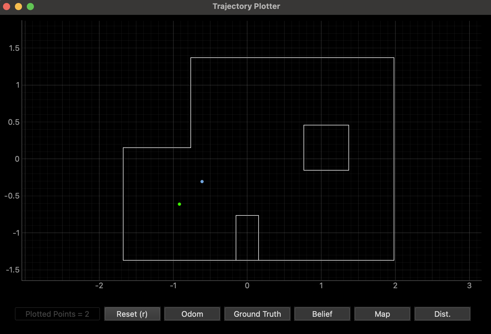
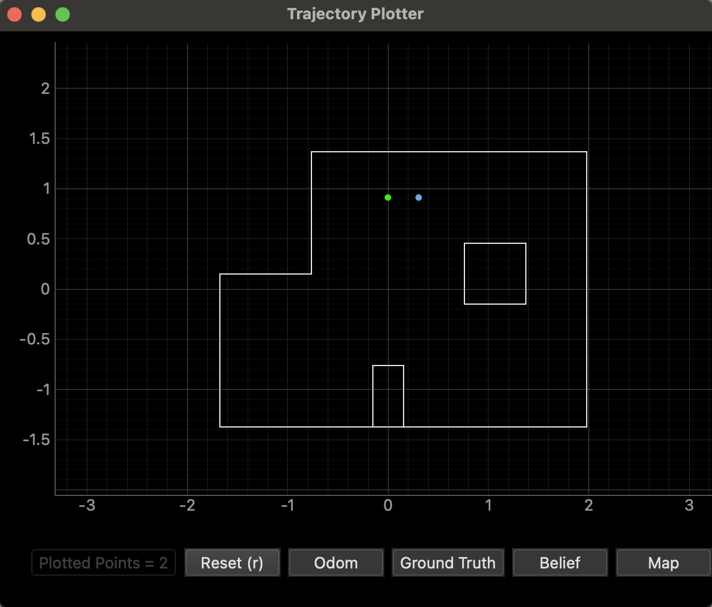
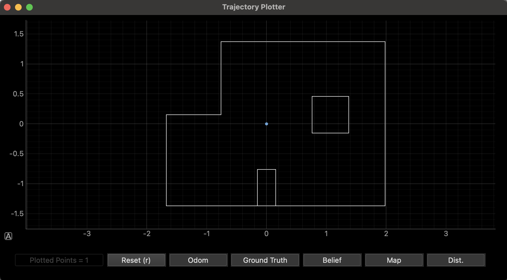

Lab 12: Planning and Execution
04.29.2025 - 05.14.2025
I worked in a group with Sana Chawla, Jennie Redrovan.
Approach
Our approach to navigating through the map was to use PID orientation and linear PID. I decided not to do localization because of my inconsistent results in the localization lab. To make up for the lack of localization, I instead created a method that takes in starting coordinates and ending coordinates. It calculates the angle it needs to face, and then uses orientation PID to reach that angle. Then, it takes the ToF sensor reading before proceeding to go forwards however much it needs to reach the next point.
Below, you can see the navigate method I created to implement this functionality.
void navigate(int x1, int y1, int x2, int y2)
{
// variables for pid_ori
pid_ori_i = 0;
start_time = (float)millis();
pid_ori_error_threshold = 5;
error_ori = 0;
prev_error_ori = 0;
error_sum_ori = 0;
current_angle = 0;
while ((float)millis() - start_time < 2000)
{
Serial.println("taking dmp vals");
pid_ori(180);
}
// find what angle to face
float dx = (x1 - x2) * 304.8;
float dy = (y2 - y1) * 304.8;
float target_angle = atan2(-dy, -dx) * 180.0 / M_PI;
// turn to angle
do
{
pid_ori(target_angle);
Serial.print("target angle: ");
Serial.println(target_angle);
delay(10);
} while (!(abs(error_ori) < pid_ori_error_threshold));
drive(0, 0);
delay(100);
// drive forwards using pid
bool move_forwards = true;
int pwm_nav;
// float kf_speed = 0; // Initial speed guess
// float kf_distance; // Will be initialized with first measurement
// pid vars
error_sum = 0;
previous_error = 0;
tof_front.startRanging();
// get initial tof measurements
while (!tof_front.checkForDataReady())
{
Serial.println("tof1 not ready");
delay(10);
}
float current_distance;
for (int k = 0; k < 10; k++)
{
current_distance += tof_front.getDistance();
}
current_distance /= 10;
// kf_distance = current_distance;
float target_distance = max(0.0, current_distance - sqrt(dx * dx + dy * dy));
Serial.print("current distance: ");
Serial.print(current_distance);
Serial.print(", target distance: ");
Serial.println(target_distance);
// move forwards with pid
while (move_forwards)
{
if (tof_front.checkForDataReady())
{
current_distance = tof_front.getDistance();
Serial.print("current distance: ");
Serial.println(current_distance);
tof_front.clearInterrupt();
tof_front.stopRanging();
tof_front.startRanging();
// kf(kf_speed, kf_distance, current_distance);
pwm_nav = pid(current_distance, target_distance);
}
// Drive based on PID output
if (abs(target_distance - current_distance) < 20)
{
drive(0, 0);
move_forwards = false;
}
else
{
if (pwm_nav > 5)
{
drive(1, abs(pwm_nav));
}
else if (pwm_nav < -5)
{
drive(-1, abs(pwm_nav));
}
else
{
drive(0, 0);
}
}
}
drive(0, 0);
}
I had to take into consideration what orientation to initialize the IMU at, as the axes and target angle calculations were dependent on that. The target distance was found by substracting the Euclidean distance from the first ToF distance readings. I decided to take ten readings right after the correct angle had been reached and the take the average. I chose to do this because I was concerned about potential noise or inconsistency in which wall the sensors were detecting. The moving forwards part of the code was done by continously reading the current distance and running pid on the current distance and the target distance.
This method did not end up working out very well for me. At first, my ToF would never behave properly, leading to my car going insane and knocking down all the map walls. However, I realized that this was because my ToF sensor was angled too upwards, which made it miss reading the wall at far distances. Instead, it would read above the wall. Thus, I had to relocate my ToF sensors, but in the process of doing that I broke one sensor. As a result, I only use one sensor for now.
After I fixed my ToF hardware, I ran the case PATH that I created to try to navigate through the map.
case PATH:
{
set_up_tof();
int NUM_POINTS = 9;
int coords[NUM_POINTS][2] = {
{-4, -3},
{-2, -1},
{1, -1},
{2, -3},
{5, -3},
{5, -2},
{5, 3},
{0, 3},
{0, 0}};
for (int i = 0; i < NUM_POINTS - 1; i++)
{
navigate(coords[i][0], coords[i][1], coords[i + 1][0], coords[i + 1][1]);
}
break;
}
As can be seen above, I hard coded the waypoint coordinates in and simply sent them to the navigate method.
After fixing the ToF issues, I managed to navigate through the first three waypoints occasionally. Unfortunately, I have no videos of the successful runs because I'm unlucky like that. I do promise that it did work though. Below are a few videos of this function almost working - either the angle is slightly off or it doesn't start at the correct initial position or car moving forwards too far, etc.
Results
Below are the results for each marked location. The green dot in each plot represents the ground truth, which was manually added in Python for each placement of the robot. The blue dot represents the belief after the Bayes filter update step. The observations at each location were made with 360° scans taken at 20-degree increments. The results show how well the localization algorithm performed at different poses.
(-3, -2)
The update step at this position yielded slightly inaccurate results, with a distance of 0.4306 m from the ground truth. I repeated this test several times and found that the belief remained relatively consistent across trials.
Below, you can see a video of the update step running after collecting mapping data.
(0, 3)
This pose also showed a slight misalignment between the belief and the ground truth, with a distance of 0.305m. This could have been caused by the lab's suggestion that sensor noise can influence the localization process, especially when the robot is placed near features with significant depth differences. In this spot, there was a huge difference in distance to the wall on the left and the distance to the wall on the right. I ran this pose multiple times, and still got the same belief values, which makes me believe that my robot was consistent if not fully accurate. Perhaps the misalignment is due to orientation mishaps.
(5, -3)

The localization results at this position were inconsistent. While a couple of the tests provided a very close match to the ground truth, with a distance of 0.4113 meters, others were very off. In particular, I struggled with the robot believing itself to be in the upper left coordinate, around (0,3). I believe this is because the surrounding environment is pretty similar, but reflected. Many of the ToF readings would have matched, so I think a lot of those predictions were caused by incorrect orientation. The more open space in this area of the arena could have resulted in fewer distinct landmarks for the robot's sensors to rely on. With fewer walls or objects to provide reliable distance readings, the sensor data may have introduced more uncertainty, leading to varied localization results.
(5, 3)


The belief at this pose was exactly the ground truth in the first run, and slightly off in the second, with a distance of 0.3044m. The second point still showed good accuracy, so I believe that my robot was consistent in predicting this pose.
(0, 0)
I also conducted an additional test at the origin (0,0). As can be seen, the robot yielded very accurate and consistent results, with all three of my tests resulting in beliefs right at the origin.
Beliefs
Below, you can see all of the belief results.
Notes and Conclusion
I referenced Stephen Wagner's lab report, and worked together with Sana Chawla and Jennie Redrovan.